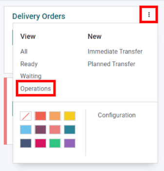
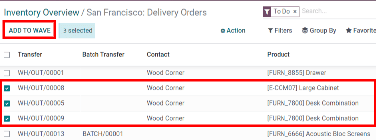

Procesar traslados por olas¶
Mientras que una transferencia por lotes es un grupo de varias recolecciones, un traslado por olas solo contiene partes de diferentes recolecciones. Ambos métodos se utilizan para recoger órdenes en un almacén y, según la situación, uno puede ser más adecuado que el otro.
Si desea gestionar órdenes de una categoría de productos específica, o buscar productos que se encuentran en la misma ubicación, lo mejor son los traslados por olas.
En Odoo, los traslados por olas son en realidad traslados por lotes con un paso adicional: los traslados se dividen antes de agruparlos en un lote.
Configuración¶
Antes de crear un traslado por olas, se deben activar las opciones Traslados por lotes y Traslados por olas.
Primero, vaya a . En la sección Operaciones, active Translado por lotes y Traslado por olas. Después, haga clic en Guardar para activar la configuración.

Agregar productos a la ola¶
Ahora que se aplicaron los ajustes, inicie un traslado por olas al añadir productos a una ola.
Los traslados por olas solo pueden contener líneas de productos de traslados del mismo tipo de operación. Para ver todos los traslados y líneas de productos de una operación en específico, vaya primero al tablero de Inventario y localice la ficha del tipo de operación deseado. A continuación, abra el menú de opciones (el icono de los tres puntos situado en la esquina de la ficha del tipo de operación) y haga clic en Operaciones.
En la página de operaciones, seleccione las líneas de productos que desea añadir en una ola nueva o existente. Después haga clic en Agregar a recolección por olas.
Truco
Use los filtros en la barra de búsqueda para agrupar líneas con el mismo producto, ubicación, transportista, etc…
Después de eso aparecerá una caja emergente.
Si desea añadir las líneas seleccionadas a un traslado por olas existente, seleccione la opción traslado por olas existente y seleccione el traslado existente en el menú desplegable.
Para crear un nuevo traslado por olas, seleccione la opción nuevo traslado por olas. Si crea un nuevo translado por oleadas, también puede establecer un empleado en el campo opcional Responsable. Una vez que seleccione las opciones deseadas, haga clic en Confirmar para añadir las líneas de producto a un traslado por ola.
Ver traslados por olas¶
Para ver todos los traslados por olas y sus estados, vaya a . Los traslados por olas también se pueden ver en la aplicación Código de barras accediendo a .